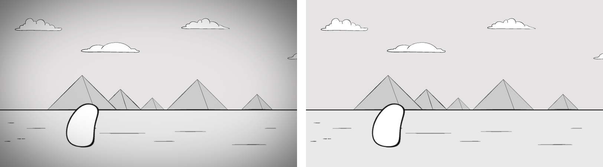
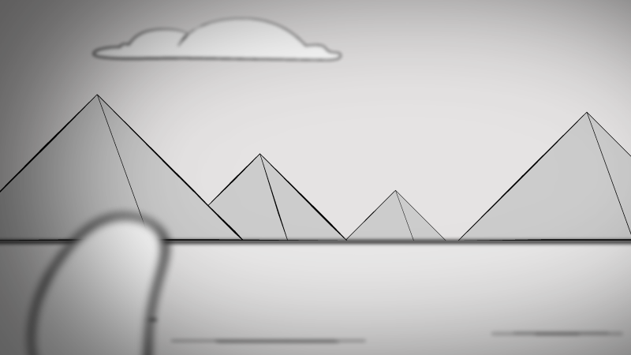

Camera effects
In the moviemaking process, the camera is one of, if not the most important aspect. Everything in the development of a film revolves around what the camera sees, how it is positioned, if it is in movement or static, if it shows the point of view of a character or of an invisible spectator.
While it is natural to think about the camera in relation to film development, when thinking about animation it may not be such a direct concept, since 2D animation is developed either entirely on a computer, or hand drawn frame by frame. At this point in the course you probably already realized that when we develop an animation, our mind is the camera. When we imagine how a scene will play out, the camera is there, giving us a sense of the composition of that scene.
How we position our camera and how we stage a scene in animation is very important, but it is equally important to direct the viewer's gaze to the important areas of a scene. This brings us back all the way to the beginning of the course, where we learned about the principle of animation called staging. This principle revolves around the idea that animated elements should be well distributed over a scene, and over time, so the viewer knows where to look and the story doesn't get lost. This is a great starting point, but we can greatly enhance this process with camera effects. These effects can be used to make our scenes more dynamic, give our environment more depth, and also give a better direction to the viewer about what is the most important element on screen at any given time.
Parallax
Parallax occurs when you have background elements further away from the camera, and foreground elements closer to the camera. When the camera moves, the elements that are further away move slower than elements that are up close, giving a 2D scene a sense of depth. The largest the distance between these elements, the more pronounced the effect is. The easiest way to apply parallax to a scene is to separate your elements in layers, and then animate them at different speeds.
https://drive.google.com/open?id=1cst6p2yyU5fDxc8eSWm8EfadonQ59hbZ
animation elements separated in layers
https://drive.google.com/open?id=1DwhPsLhKDosww4ba-b8_eHB6tgPDW9F6
animation without parallax
https://drive.google.com/open?id=1kdEkQaxNNaoyYU4t1n8slxtxiegipIGN
animation with parallax
Depth of Field
Depth of field relates to the distance of an element in relation to the camera, and what element the camera is focusing on. When an element is in focus, it appears sharp, while other elements in different distances from the camera will appear blurred, or out of focus. This effects happens naturally when using a camera in real life, but in 2D animation the effects needs to be carefully planned and applied. When used well, it can add a great sense of depth to the scene. Since our eyes tend to give preference to focused images, it is also very effective to direct the viewer's gaze to important elements in the scene. The simplest way to simulate depth of field in a 2D animation is by applying the Gaussian Blur effect to different layers in After Effects.
Here is a video on how to use Gaussian Blur to create depth of field in After Effects: https://drive.google.com/open?id=1LsdSznveVDv1tqvK33tUJCEAmjLoQNum
https://drive.google.com/open?id=1kdEkQaxNNaoyYU4t1n8slxtxiegipIGN
animation without depth of field
https://drive.google.com/open?id=13nweFOhLqi6A2dzN4q9GiHK0AI_K6JWO
animation with far focus
https://drive.google.com/open?id=1sUOfTpaunlA_ulyaFS3FYAg6SD1NE_pS
animation with near focus
Vignette
Vignetting has its roots on an effect that resulted from the blocked light on the border of photographic lenses. This effect is achieved by fading the edges of a scene by using brightness, saturation or blur effects. Vignette is especially effective in directing the viewer's attention. It would originally be centered on the frame, but in animation we can use it more creatively to highlight different areas of an image.
 an example of the same scene with (left) and without (right) vignette
 vignette being used off-center to direct the viewer's attention
This video is a step-by-step on how to create a vignette effect: https://drive.google.com/open?id=1xVnezF6-OIqkOCnJDhTtSRO1axHJmnSQ